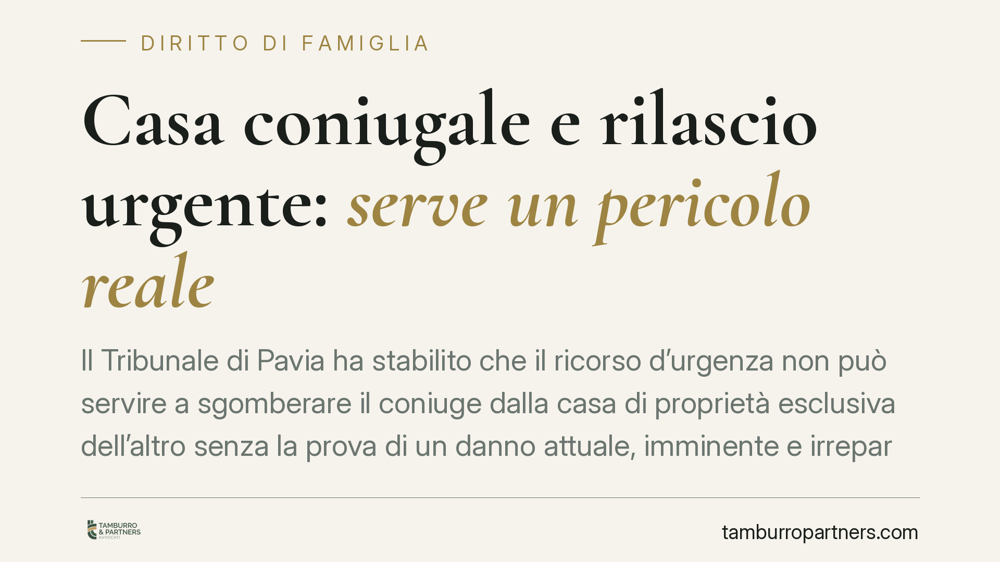

Casa coniugale e rilascio urgente: serve un pericolo reale
Il Tribunale di Pavia ha stabilito che il ricorso d'urgenza non può servire a sgomberare il coniuge dalla casa di proprietà esclusiva dell'altro senza la prova di un danno attuale, imminente e irreparabile. La sola convivenza conflittuale non basta. Una decisione che ridimensiona un uso improprio dell'art. 700 cpc nelle crisi familiari.

Il caso deciso a Pavia
Un coniuge, unico proprietario dell'abitazione, chiedeva in via d'urgenza l'allontanamento dell'altro, ancora residente nell'immobile. La convivenza era ormai logorata dai conflitti e il ricorrente riteneva insostenibile la coabitazione.
Il Tribunale di Pavia (Pres. Caterbi, Giud. Rel. Rocchetti) ha respinto la domanda. La ragione è netta: il ricorso d'urgenza non è lo strumento per risolvere una crisi coniugale in corso quando manca un pericolo concreto e imminente per la parte che lo invoca.
Inquadramento normativo
L'art. 700 del codice di procedura civile consente un provvedimento cautelare "atipico" quando ricorrono due presupposti congiunti: il *fumus boni iuris*, cioè l'apparente fondatezza del diritto azionato, e il *periculum in mora*, cioè il fondato timore che durante il tempo necessario a ottenere una tutela ordinaria il diritto sia minacciato da un pregiudizio imminente e irreparabile.
È proprio il secondo requisito a mancare nel caso pavese. Il giudice ha ricordato che il periculum deve essere attuale, non ipotetico, e deve riferirsi a un danno che una successiva pronuncia non potrebbe più riparare. La tensione tra i coniugi, per quanto pesante, non produce di per sé un pregiudizio di questo tipo.
Sul piano sostanziale rileva anche l'art. 157 del codice civile, che disciplina la cessazione degli effetti della separazione e conferma come la regolazione dei rapporti tra coniugi separandi passi dalle procedure di famiglia, non da una scorciatoia cautelare. L'assegnazione o il rilascio della casa familiare seguono regole proprie, calibrate sull'interesse dei figli e sui rapporti economici, che il rito d'urgenza non è chiamato a surrogare.
Cosa cambia per chi vive una separazione
La decisione ha un valore pratico che va oltre il singolo caso. Chi è proprietario esclusivo dell'immobile potrebbe essere tentato di ottenere lo sgombero rapido del coniuge invocando l'urgenza. La pronuncia chiarisce che questa strada è preclusa se non si dimostra un pericolo reale e concreto.
La "coabitazione conflittuale" — litigi, freddezza, disagio quotidiano — non integra il periculum in mora. Serve qualcosa di più: un rischio effettivo per l'incolumità, per il patrimonio o per un diritto che diventerebbe irrecuperabile con il passare del tempo.
Attenzione, però, a non trarre conclusioni sbagliate. Il principio non protegge condotte violente o pericolose. Di fronte a maltrattamenti, minacce o comportamenti che mettano a rischio la sicurezza personale esistono strumenti mirati, come gli ordini di protezione contro gli abusi familiari (artt. 342-bis e 342-ter c.c.) e le tutele penali. Sono questi, e non l'art. 700 cpc generico, i rimedi da attivare quando il pericolo è concreto.
Per il coniuge che ancora abita l'immobile, la decisione conferma che la permanenza non può essere interrotta con un provvedimento sommario privo di reali presupposti. Ciò non significa un diritto illimitato a restare: la posizione andrà definita nelle sedi proprie, tenendo conto della proprietà, della presenza di figli e degli equilibri economici.
Cosa fare in concreto
- Valutate la reale natura del pericolo. Se esiste un rischio per l'incolumità, documentatelo subito (referti, denunce, testimonianze) e attivate gli strumenti a tutela della persona, non un generico ricorso d'urgenza.
- Non confondete il disagio con il periculum. La convivenza difficile non giustifica lo sgombero cautelare: preparate invece la strategia nella procedura di separazione o divorzio.
- Raccogliete la documentazione sulla proprietà. Atti di acquisto, mutui e contributi economici sono decisivi per definire chi possa restare nell'immobile e a quali condizioni.
- Considerate l'interesse dei figli. Quando ci sono minori, l'assegnazione della casa familiare segue criteri specifici che prevalgono sul titolo di proprietà: pianificate di conseguenza.
- Consigliamo di verificare la sede corretta. Prima di depositare un ricorso, chiarite con un professionista quale rimedio sia effettivamente esperibile: un'iniziativa mal impostata rischia il rigetto e costi inutili.
---
*Contributo informativo a cura di Tamburro & Partners - Avv. Giuseppe Tamburro. Non costituisce parere legale.*
Ogni famiglia ha il suo equilibrio.
Separazione, divorzio, affidamento, assegno: se vuoi un confronto riservato su una specifica situazione, scrivi allo studio. Ti rispondiamo entro un giorno lavorativo.